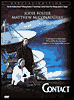

| video |
| home page |
| This service is being made available FREEbut please support it and tell other about it especially if you enjoyed it. . Ireland Documentary Images A Vision of Ireland (Best in Internet Explorer and Millions of colours) Vision of Ireland is a collection of documentary pictures of the West of Ireland taken by Giacomino Celeste Parkinson. These are a few of the pictures I have taken over the years of the West of Ireland. The will give you some idea of the visual interest that I have. |
|  |
| Description of film projects on Tibetan refugees and the Indian sitar master, Nikhil Banerjee. Bartholomew, Pablo - An extensive biography and portfolio of the award-winning photographer, recently a jury member of the World Press Photo competition. Bingham, Stuart - Photojournalism and documentary photography. Brunet, Jerome - French photographer's photo story on the police in Texas. Chu, Jenny - Portraits of China's ethnic minority groups. |